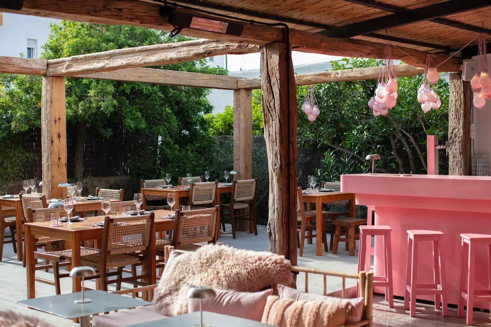

01 / Mira
The new challenge: fusion with a pulse.
Portuguese instinct, Ibiza appetite, world flavours.
Mira Lounge Ibiza is the new challenge: a room where Tiago is realizing his love for fusion cuisine through Portuguese instinct, Ibiza appetite, world flavours, and a service rhythm that wants more than a polite dinner.
His role is concept and kitchen leadership: shaping the food direction, building rhythm with the team, and making sure the menu, the room, and the atmosphere feel like one idea.
